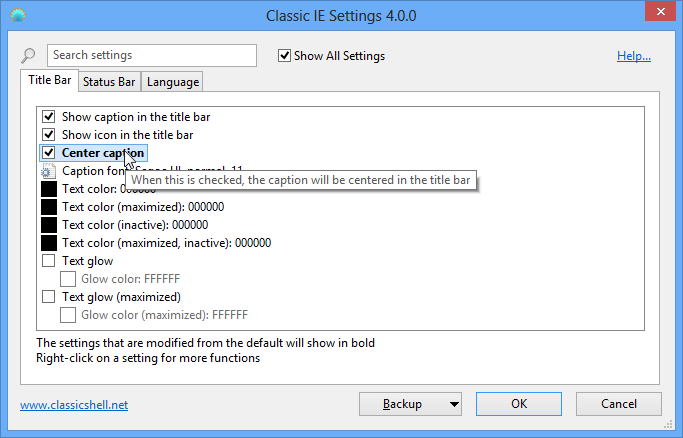

Classic IE
Classic IE
Classic IE
es
un pequeño complemento para Internet Explorer que:
- Agrega un título a la barra
de título para que pueda ver el título de la página completo
- Muestra la zona de seguridad en la barra de estado
- Muestra el progreso de carga en la barra de estado
Vea el título de la página completo aun cuando no quepa en la pestaña:

Vea el progreso y la zona de seguridad:

Instalación
Al ejecutar Internet Explorer por primera vez después de instalar
Classic IE, podría indicarle que se instaló un complemento nuevo llamado ClassicIEBHO y
si desea habilitarlo. Haga clic en el botón Habilitar. Si
no se le pide confirmación, vaya a Herramientas -> Administrar complementos y asegúrese de que ClassicIEBHO esté habilitado. Luego de habilitar el complemento, tiene que reiniciar Internet Explorer para activarlo.
Configuración
Puede tener acceso a la configuración desde Herramientas -> Configuración de Classic IE
o desde el menú inicio. Las configuraciones controlan el color y la fuente del
título, y qué información mostrar en la barra de estado.

Puede elegir entre ver sólo las configuraciones básicas o todas
las configuraciones disponibles. Sitúe el mouse sobre cada configuración para ver una descripción de
para qué sirve. Para buscar una configuración por su nombre, escriba en el cuadro de búsqueda.
Toda configuración tiene un valor predeterminado. El valor predeterminado puede ser constante,
o depender de la configuración actual del sistema. Una vez que edite una
configuración, se volverá "modificada" y se mostrará en negrita. Para revertir al
valor predeterminado, haga clic con el botón secundario en la configuración.
Puede guardar las configuraciones en un archivo XML, y ulteriormente volver a cargarlas.
Para tener acceso a estas funciones, pulse el botón Copia de seguridad. Desde allí también puede
restablecer todas las configuraciones a sus valores predeterminados.
Para almacenar sus configuraciones, pulse Aceptar. Para aplicar la configuración nueva, tiene que reiniciar Internet Explorer.
Configuración administrativa
Las configuraciones son
por usuario y se almacenan en el registro. De manera predeterminada, todos los usuarios pueden editar
toda su configuración. Un administrador puede bloquear configuraciones específicas, de
modo que ningún usuario las pueda editar. Esto se logra agregando la configuración a la clave del registro HKEY_LOCAL_MACHINE\SOFTWARE\OpenShell\ClassicIE.
Quizá no quiera bloquear la configuración, sino sólo reemplazar su valor
inicial. De ser así, agregue "_Default" al nombre del valor del registro.
La manera más fácil de saber el nombre de una configuración en el registro y su valor es modificarla, y acto seguido buscarla en HKEY_CURRENT_USER\Software\OpenShell\ClassicIE\Settings.
Puede que a veces desee bloquear una configuración en su valor predeterminado, pero no
sabe cuál es el valor predeterminado. De ser así, cree un valor DWORD y establézcalo
en 0xDEFA.
También hay una configuración global EnableSettings. Establézcala en 0 en el
registro para evitar incluso que los usuarios abran el diálogo Configuración:

También se admite la edición de configuraciones a través de directivas de grupo. Extraiga el archivo PolicyDefinitions.zip que se encuentra en la carpeta de instalación y lea el documento PolicyDefinitions.rtf para más detalles.